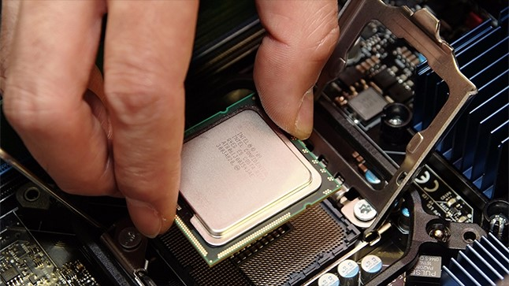

CPU는 ‘Central Processing Unit’의 약자로서,직역 하면 중앙처리장치(中央處理裝置)다. 단어 그대로, 컴퓨터의 정중앙에서 모든 데이터를 처리하는 장치라는 뜻이다. CPU는 컴퓨터의 두뇌에 해당하는 것으로서, 사용자로부터 입력 받은 명령어를 해석, 연산한 후 그 결과를 출력하는 역할을 한다. 그리고 이렇게 하나의 부품에 연산 장치, 해독 장치, 제어 장치 등이 집적되어 있는 형태를 일컬어 ‘마이크로프로세서(Micro-processor)’라고 한다. CPU와 마이크로프로세서는 거의 같은 의미로 쓰이는 일이 많다. 다만 마이크로프로세서 중에는 전기밥솥이나 세탁기와 같은 제품의 제어용으로 쓰이는 것도 있어, 일반적인 컴퓨터에 장착되는 CPU와는 미묘하게 의미가 구분된다(여기서는 CPU라고 통일해 지칭). 